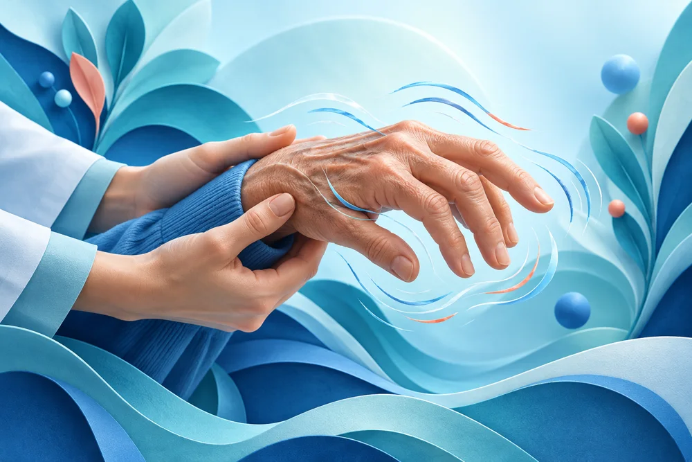
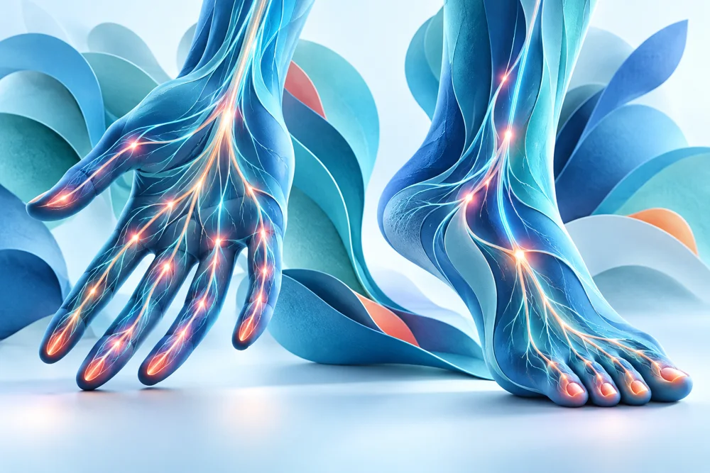
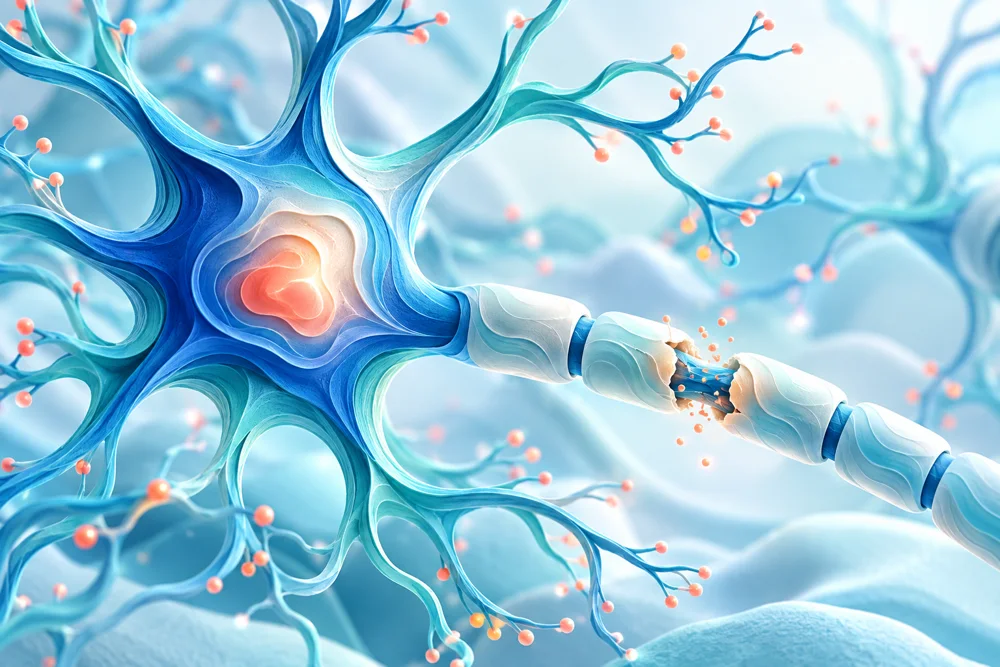
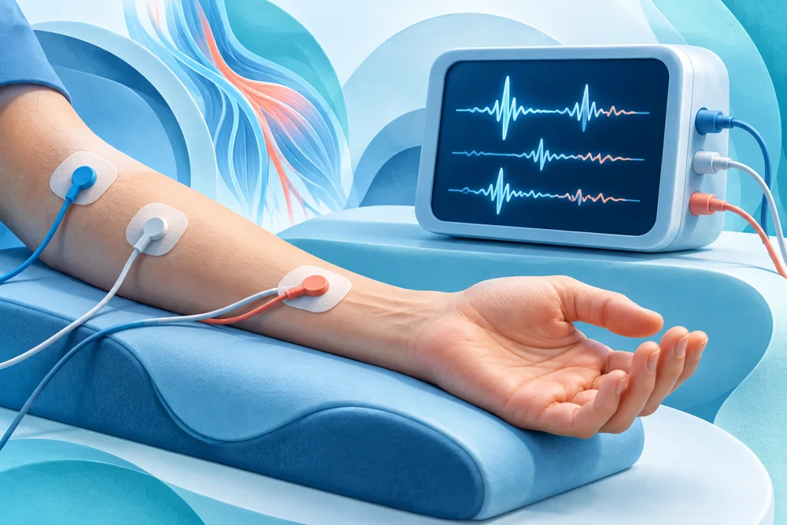
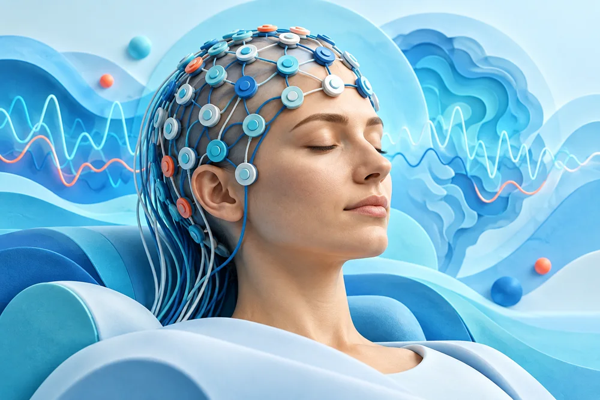
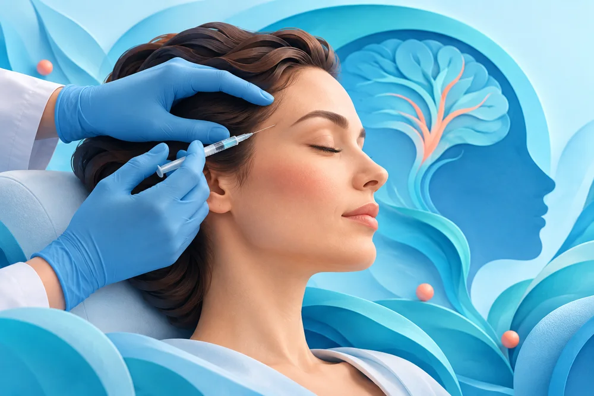

01
Parkinson
Parkinson hastalığının nörolojik değerlendirmesi ve takibi.
HAREKET BOZUKLUKLARIUZM. DR. · NÖROLOJİ UZMANI
Beyin, sinir ve kas sağlığı.
Yaşamın her anında.
Nörolojik değerlendirme, ilgi alanları
ve uygulamalar hakkında bilgi edinin.
01 / HAKKIMDA
Uzm. Dr. Tuba Karakoyun Alpay, tıp eğitimini Dokuz Eylül Üniversitesi Tıp Fakültesinde tamamladı. Nöroloji uzmanlığını Namık Kemal Üniversitesi Tıp Fakültesi Nöroloji Kliniğinde aldı.
Mesleki çalışmalarını Çerkezköy Devlet Hastanesinde nöroloji uzmanı olarak sürdürmektedir.
Tıp Fakültesi
Tıp Fakültesi · Nöroloji Kliniği
Nöroloji Uzmanı
02 / İLGİ ALANLARI
İlgi alanları ve nöroloji pratiğinde
ele alınan başlıca konular.

Parkinson hastalığının nörolojik değerlendirmesi ve takibi.
HAREKET BOZUKLUKLARIBellek yakınmaları, Alzheimer hastalığı ve demans değerlendirmesi.
BELLEK VE BİLİŞSEL İŞLEVLER
Çevresel sinir sistemi hastalıklarının nörolojik değerlendirmesi.
ÇEVRESEL SİNİR SİSTEMİ
Multipl skleroz hastalığının değerlendirmesi ve takibi.
MERKEZİ SİNİR SİSTEMİBaş ağrısı yakınmalarının ve migrenin nörolojik değerlendirmesi. Uygun hastalarda migren botoksu uygulaması.
BAŞ AĞRISI DEĞERLENDİRMESİ03 / UYGULAMALAR
Her inceleme ve tedavinin uygunluğu,
kişisel değerlendirme ile belirlenir.

Elektromiyografi
Sinir iletim çalışmaları ve gerektiğinde iğne EMG ile sinir ve kasların elektriksel işlevleri değerlendirilir.
İncelemenin kapsamı, yakınmalarınıza ve muayene bulgularınıza göre belirlenir. İşlem öncesi kullandığınız ilaçları ve mevcut hastalıklarınızı hekiminizle paylaşın.

Elektroensefalografi
Saçlı deriye yerleştirilen elektrotlarla beynin elektriksel aktivitesini kaydeden bir incelemedir.
Özellikle nöbetlerin değerlendirilmesinde kullanılır. Çekime temiz ve kuru saçla gelinmesi önerilir; size verilen hazırlık talimatlarını izleyin.

Botulinum toksin uygulaması
Kronik migreni olan uygun hastalarda, baş ağrısını önlemeye yönelik değerlendirilebilen bir tedavi seçeneğidir.
Her baş ağrısında uygulanmaz. Uygunluk; baş ağrısının sıklığı, daha önce kullanılan tedaviler ve nörolojik değerlendirme dikkate alınarak belirlenir.
NHS — Sinir iletim çalışmaları ve EMG · NHS — EEG · NICE — Kronik migrende botulinum toksin
04 / İLETİŞİM
Uzm. Dr. Tuba Karakoyun Alpay'ın
Instagram hesabına ulaşabilirsiniz.
@tubakarakoyunalpay
Nöroloji · Çerkezköy / Tekirdağ